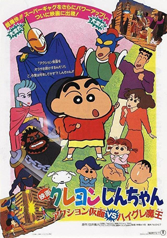

짱구는 못말려 극장판
인기 애니메이션 시리즈 '짱구는 못말려'의 극장판 시리즈. 일본에서는 매년 4월의 세 번째 금요일, 골든위크 시즌에 개봉한다.
MOVIE
-

극장판 1기: 액션가면VS그래그래마왕
1993 · 애니메이션/액션/모험/코미디/SF/키즈 · 일본
1시간 33분 · 전체
아이들은 액션가면을 TV 속의 인물인줄만 알고 동경한다. 짱구는 친구들과 함께 액션 가면 카드를 사모으며 즐거운 하루를 보낸다. 드디어 여름방학이 시작되는데, 아버지가 갑자기 바다로 놀러가자고 한다. 그것은 지구를 지키는 액션가면이 그들을 바다로 유인해낸 것이다.한편, 우주에서 온 그래그래 마왕은 지구를 지배하기 위해 사람들의 영혼을 빼앗아간다. 짱구는 지구를 지키기 위해 액션가면과 힘을 합치는데...
-
극장판 2기: 부리부리 왕국의 숨겨진 보물
1994 · 애니메이션/액션/모험/판타지/코미디/키즈 · 일본
1시간 27분 · 전체
우연히 시장에서 경품 추첨에 응모한 짱구와 짱구 엄마는 특별상에 당첨된다. 특별상의 내용은 부리부리 왕국 5박 6일 가족여행권! 하지만 이 여행은 악당 화이트 스네이크단이 꾸민 무시무시한 음모였다. 이런 사실을 모른 채 짱구 가족은 부리부리 왕국으로 여행을 떠나고, 비행기 안에서부터 악당들의 맹렬한 추격전이 시작된다. 무슨 이유에선지 화이트 스네이크단은 짱구를 잡아가려고 하고, 엎치락뒤치락하는 접전 끝에 결국 짱구는 잡힌다. 한편 짱구가 잡혀간 화이트 스네이크단의 지하 감옥에는 짱구와 똑같이 생긴 부리부리 왕국의 왕자, 찡구가 갇혀 있었다. 알고 보니 부리부리 왕국의 엄청난 보물과 함께 부리부리 왕국을 통째로 집어삼키려는 아나콘다의 계획에는 짱구와 찡구가 모두 필요했던 것! 과연 짱구는 악당의 손에서 무사히 빠져나올 수 있을까...?
-

극장판 3기: 흑부리 마왕의 야망
1995 · 애니메이션/액션/모험/코미디/SF/스릴러 · 일본
1시간 36분 · 15세
타임머신 사고 때문에 흰둥이의 몸에 들어간 타임 패트롤 대원인 링링은 과거의 이상한 흐름을 감지하고, 시간을 바로 잡기 위해 짱구와 그의 부모를 설득해 과거로 날아간다. 시간 흐름에 이상을 생기게 한 흑부리 마왕을 처치하기 위해, 짱구는 몰락한 가문의 후예인 하리용과 손을 잡고, 마침내 흑부리 성으로 쳐들어가는데…
-
극장판 4기: 핸더랜드의 대모험
1996 · 애니메이션/모험/코미디/판타지/스릴러/키즈 · 일본
1시간 37분 · 15세
우주를 돌아다니며 나쁜 짓을 하는 악당들이 드디어 지구까지 손에 넣으려고 한다. 그들은 핸더랜드라는 놀이공원을 본거지로 삼아, 본격적으로 지구 공략에 나선다. 우연히 핸더랜드에 놀러간 짱구는 토페마에게 악당들의 음모를 듣게 된다. 토페마는 짱구에게 힘을 합쳐 악당들을 물리치자고 하지만, 짱구는 겁을 먹고 주저한다. 하지만 악당들은 이미 짱구가 <굉장해 엄청나 트럼프>를 가지고 있다는 사실을 알고 짱구를 찾아온다. 엄마, 아빠까지 휘말리면서 짱구는 어쩔 수 없이 악의 무리에 대항해서 싸우게 되는데...
-

극장판 5기: 암흑 타마타마 대추적
1997 · 애니메이션/코미디/키즈/모험/액션 · 일본
1시간 36분 · 전체
짱구는 어느 날 오후, 강가에서 자고 있는 한 남자 옆에서 작은 구슬을 하나 줍는다. 그 구슬은 옛날 주유랑족과 주황천족이 세상을 지배할 수 있는 힘을 가진 `잭`이라는 악마를 토기 인형 안에 봉인해 둔 열쇠가 되는 구슬이었다. 잭을 부활시켜 세상을 지배하려는 핵슨과 주황턴족의 여자 우두머리의 음모로 잭을 부활시킬 구슬 두 개를 찾아 혈전이 펼쳐진다. 세상의 평화를 지키려는 주유랑족은 주황천족과 핵슨의 음모에 맞서 구슬을 지키기 위해 싸운다.
짱구가 처음 본 남자 로즈는 주유랑족 우두머리의 큰 아들이었던 것이다. 세상을 지키려는 주유랑족과 세상을 지배하려는 주황천족의 싸움에 우연찮게 말려든 짱구와 가족들은 무사히 세상의 평화를 지켜낼 수 있을 것인가!! -
극장판 6기: 돼지발굽 대작전
1998 · 애니메이션/코미디/가족 · 일본
1시간 39분 · 15세
전대미문의 바이러스 부리부리 꿀꿀로 전 세계 컴퓨터를 장악하여 세계를 정복하려는 악의 집단 돼지 발굽을 막기 위해 세계 평화를 수호하는 비밀 조직 SML은 암호명 슈퍼 모델을 보내 바이러스 디스크를 찾아오게 한다. 무사히 임무를 완수한 슈퍼 모델은 돼지 발굽의 비행선에서 탈출해 한강으로 떨어지고, 마침 유람선을 타고 소풍을 나온 짱구와 친구들을 만나게 된다. 그러나 짱구와 친구들, 그리고 슈퍼 모델은 디스크가 도난 당한 사실을 알고 추적해 오던 돼지 발굽에게 납치된다. 사고 소식을 들은 슬퍼하던 짱구 아빠와 엄마는 SML의 비밀요원 근육맨의 방문을 받는다. 근육맨은 자신이 아이들을 구출해 오겠다고 하지만 짱구를 직접 찾겠다고 결심한 아빠, 엄마는 근육맨에게 변비약까지 먹이며 소동을 벌인 끝에 근육맨의 비밀 서류를 손에 넣고, 짱구를 찾아 홍콩에 있는 돼지 발굽의 배에 잠입한다. 한편 슈퍼모델은 아이들을 캡슐에 태워 탈출시키는 데 성공하지만 황량한 사막에 떨어진 아이들은 마을을 찾아 헤매다 또다시 돼지 발굽에게 잡히게 된다. 결국 위기에 처한 아이들을 구하기 위해 슈퍼 모델은 돼지 발굽에게 디스켓을 넘겨주는데.
-
극장판 7기: 폭발! 온천 부글부글 대작전
1999 · 애니메이션/코미디/가족 · 일본
1시간 50분 · 15세
어느 날, 경찰들이 나타나 불발탄이 있다며 짱구와 엄마, 짱아, 흰둥이를 어디론가 데리고 간다. 짱구 가족들을 납치한 것은 ‘온천 가드맨’이라는 온천 수호단. 이들은 목욕을 싫어하는 ‘때안미러’단들이 ‘지구 온천화 계획’을 세우고 있다는 것을 알고는 전설의 온천인 ‘황금 온천탕’을 찾았던 것이다. 그리고 그 ‘황금 온천탕’이 짱구네 집 밑에 있다는 것을 알고 짱구 식구들을 몰래 데리고 온 뒤 그 집에서 온천을 찾기 시작한다. 하지만 미처 온천을 파내기도 전에 ‘때안미러’의 공격을 받기 시작하는데...한편, ‘때안미러’의 두목인 때바라는 30년 전의 원한 때문에 목욕을 하기 싫어했고 그 복수심에 목욕을 좋아하는 모든 사람들을 없애기로 마음 먹었다. 그것을 위한 계획인 ‘지구 온천화 계획’을 착착 실행에 옮기기로 하지만, 온천 가드맨이 어떤 집에서 무엇인가를 찾고 있다는 사실을 알고 짱구 식구들과 그 보디가드인 온천 가드맨을 납치해 오는데...
-
극장판 8기: 폭풍을 부르는 정글
2000 · 애니메이션/코미디/가족 · 일본
1시간 30분 · 전체
액션 가면의 새 영화 시사회를 개최하는 유람선 여행에 참가한 짱구와 아이들은 마냥 즐겁기만 하다. 그러나 영화 상영 도중 원숭이들이 나타나 액션가면 역의 배우 최강태와 어른들을 모두 잡아가 버린다. 짱구는 친구들과 함께 어른들을 찾아 나서고 짱구를 기다리던 동생 짱아도 흰둥이와 함께 짱구를 찾아 나선다. 그러나 짱구를 제외한 아이들도 모두 원숭이들에게 잡혀가고 만다. 짱아의 울음소리 덕에 위기를 모면한 짱구와 짱아는 원숭이들의 왕, 파라다이스 킹의 본거지를 찾아내 잠입하는데. 원숭이들과의 처절한 싸움 끝에 원숭이들의 지배자가 된 파라다이스 킹은 액션가면과 결투를 벌여 승리한 후 자신의 업적을 찬양하는 만화 영화를 만들어 세계를 세뇌시킬 생각을 가지고 있는데...
-
극장판 9기: 어른 제국의 역습
2001 · 애니메이션/코미디/가족 · 일본
1시간 29분 · 15세
떡잎마을에 20세기 박물관이 생기자 어른들은 그곳에 푹 빠져 헤어 나오지 못한다. 그러던 어느 날, 20세기 박물관은 TV를 통해 중요한 안내 방송을 한다. 그때부터 어른들은 어린아이처럼 행동하기 시작하고, 다음 날 아침에는 박물관에서 보낸 트럭을 타고 단체로 사라진다. 그 이후 남겨진 아이들도 20세기 박물관에서 보낸 트럭에 실려 어딘가로 끌려가고, 짱구와 친구들은 이리저리 도망친다. 어른들을 찾으러 간 20세기 박물관에서 이 모든 일을 꾸민 켄을 만난다. 켄은 어른들이 20세기의 냄새에 취해 어린 시절로 돌아갔다고 하면서, 자신의 목표는 20세기를 되살리는 것이라고 한다. 한편, 짱구는 20세기 박물관에서 아버지와 어머니를 구하고, 한자리에 모인 짱구 가족들은 켄의 음모를 막기 위해 마지막 결전을 준비하는데...
-
극장판 10기: 태풍을 부르는 장엄한 전설의 전투
2002 · 애니메이션/코미디 · 일본
1시간 34분 · 15세
어느날 밤, 짱구네 일가 전원은 똑같은 꿈을 꾼다. 한 호수에 여인이 앉아있는 꿈을... 다음날, 짱구는 앞마당에 강아지 흰둥이가 판 구멍에서 자신이 쓴 편지를 발견한다. 짱구는 그 편지를 쓴 적이 없는데... 눈을 떠보니 꿈 속에서 본 그 호수에 와 있었다. 더 가보니 전쟁이 일어나 있는데...
-
극장판 11기: 태풍을 부르는 영광의 불고기 로드
2003 · 애니메이션/모험/코미디/범죄 · 일본
1시간 28분 · 전체
아침밥이 부실하자 생떼를 쓰며 불만을 토로하는 식구들에게 저녁에는 비싼 불고기를 해먹기로 약속한 엄마. 아침부터 시끌버적한 짱구네 집에 정체 불명의 남자들이 들이닥치고, 그들 때문에 누명을 쓰고 온 가족이 전국에 지명수배까지 당하는 신세가 된다. 누명을 벗고 저녁식사로 불고기를 먹기 위해 악당을 물리치고 쫓고 쫓기는 대활극을 벌이는 짱구 가족의 코믹 어드벤쳐 이야기.
-
극장판 12기: 폭풍을 부르는 석양의 떡잎마을 방범대
2004 · 애니메이션/코미디/모험/가족 · 일본
1시간 35분 · 전체
영화관에서 상영되고 있던 서부극의 세계로 빠져 든 '카스카베 방위대(かすかべ防衛隊)'의 친구들. 원래의 기억을 잃고 영화 속 캐릭터가 된 그들을 구하기 위해 신짱이 동분서주한다.어느날, 신 짱과 친구들은 놀다가 골목길에서 카스카베 영화관을 발견한다. 그곳에서 친구들이 행방불명 되어 버려서 신 짱은 가족을 데리고 영화관으로 온다. 스크린에는 서부극 영화가 비쳐 있었고, 무척 조용하고 음산했다.. 그런데.... 노하라 가족이 정신을 차려보니 서부극 영화 속. 그곳에서 만난 친구들은 이미 기억을 모두 잃어버린 채였다. 그러나, 영화 속에서도 원래 카스카베에 살다가 끌려온 사람들이 많았다. 그 영화 속 마을에서는 '저스티스 러브' 라는 지사가 마을을 지배하며 사람들을 괴롭혔다. 그 중에 카스카베에서 살던 사람인 '마이크' 라는 사람의 말을 듣는다. "이 영화는 우리들을 끌어들였습니다. 여기서 살다 보면 현실의 기억을 잊어버리고.,. 게다가 여기서는 시간이 흐르지 않습니다. 보세요. 태양도 움직이지 않지요." 몇 년이 흐른 후, 노하라 가족은 직접 자신들이 영화를 끝내고자 생각하고, 신 짱은 가족들과 친구들과 영화 속에서 만난 여자아이 '츠바키' 와, '오케가와 박사' 와, '마이크'와 함께, 영화를 탈출하기 위해 마을의 금지 구역으로 기차를 타고 향한다.
-
극장판 13기: 부리부리 3분 대작전
2005 · 애니메이션/코미디 · 일본, 미국
1시간 28분 · 15세
어느날 집안에 다른 세계와 연결되어 있는 곳을 발견한 짱구네 가족. 그곳을 통해 그들 앞에 미래맨이 나타난다. 그는 3분 후에 괴물이 나타날 것이며 3분 후의 미래로 가서 그 괴물을 쓰러뜨리지 못하면 현실 세계에 실제로 괴물이 나타나게 된다고 말한다. 짱구와 가족들은 3분 안에 괴물을 물리쳐 지구를 구해야하는 운명에 처하게 되는데...
-

극장판 14기: 전설을 부르는 춤을 춰라! 아미고
2006 · 애니메이션/코미디/가족/SF · 일본
1시간 30분 · 15세
삼바 리듬을 좋아하는 가짜 인간들이 나타나 진짜를 납치해버리고 자신들이 진짜인 것처럼 행동하기 시작한다. 온 마을이 점령당하고 짱구네 가족들과 친구들만이 비밀조직원 제클린의 도움으로 겨우 살아 남은 가운데, 제클린은 '아미고'라는 바이오테크놀로지계의 세계적 거물이 배후에 있다는 것을 알려준다. 이제 짱구네 가족들과 친구들은 점점 포위망을 좁혀오는 가짜 괴물들에 맞서 싸워야만 하는데...
-
극장판 15기: 태풍을 부르는 노래하는 엉덩이 폭탄
2007 · 애니메이션/코미디/가족 · 일본
1시간 42분 · 15세
제주도에서 오랜만에 평화로운 휴가를 즐기는 짱구네. 짱구와 즐거운 한 때를 보내던 흰둥이는 눈 깜짝 할 사이 엉덩이에 의문의 기저귀(?)가 붙어 버린다. 휴가를 마치고 집으로 돌아온 짱구네를 찾아 온 국제우주감시센터 U.N.K.A.(이하 응카)는 짱구네를 찾아와 흰둥이 엉덩이의 기저귀가 사실은 지구를 날려버릴 무시무시한 폭탄이라고 말하며 흰둥이를 그 폭탄과 함께 우주로 보내버려야 한다고 하고, 짱구는 흰둥이를 보낼 수 없어 몰래 응카를 피해 도망을 친다. 그 시각, 이 정보를 엿들은 미녀테러집단 개양귀비 뮤지컬 공연단도 폭탄을 추격하기 시작한다. 과연, 짱구는 지구를 날려버릴 엄청난 폭탄을 엉덩이에 단 흰둥이를 무사히 구출하고 지구를 구할 수 있을 것인가?!
-
극장판 16기: 엄청난 태풍을 부르는 금창의 용사
2008 · 애니메이션/모험/코미디/드라마/가족/판타지 · 일본
1시간 33분 · 15세
'돈 쿠라이의 세계에는 금창, 은 방패, 청동 방울이라는 전설의 무기들이 있는데, 돈 쿠라이가 흐트러졌을 때 그것들이 모두 사라져 버렸다... 금창, 은 방패, 청동 방울은 용사의 무기.. 선택받은 자가 그걸 손에 넣으면 돈 쿠라이를 구원할 수 있다!' 액션 가면에 나오던 액션 소드를 얻은 신 짱. 무척 들뜬 기분이었으나, 액션 소드는 상자에서 꺼내자 이상한 대나무창으로 변해버린다. 그리고 신 짱은 유치원에서 돌아오는 길에, 자신이 키우는 강아지 '시로'와 무척 닮은 검은색 강아지를 발견, 쿠로라고 이름붙이고 시로와 함께 키운다. 하지만, 안심은 잠시, 비디오 대여점의 프리린이라는 누나가 신 짱이 이상한 공간, 즉 돈 쿠라이의 세계와 연결되는 문을 열게 하고, 지구는 돈 쿠라이의 악의 힘이 흘러들어와 인류는 불행만을 겪어 간다. 신 짱은 마타.타미라는 소년으로부터 이야기를 듣는다. '넌 지구와 돈 쿠라이를 연결해 버렸어!' 그 프리린이라는 누나는 나쁜 사람이었다. 이제 신 짱은 선택된 용사로써, 돈 쿠라이의 대마왕 아세.다크.다크와 대적해야 했는데.. 도대체 그 액션 소드였던 이상한 대나무창과, 검은 강아지 쿠로의 정체는 무엇일까? 그리고 신 짱을 계속 도와주는 소년 마타의 정체는..
-
극장판 17기: 포효하라! 떡잎 야생왕국
2009 · 애니메이션/코미디 · 일본
1시간 37분 · 15세
떡잎마을의 새로운 마을 회장 나자연은 활발한 환경보호운동을 벌인다. 한편 유치원 환경 교육으로 자연 정화 활동을 하던 짱구는 초록색 음료를 주워 오고, 음료를 마신 짱구의 엄마 아빠는 동물로 변하고 만다.
-
극장판 18기: 초시공! 태풍을 부르는 나의 신부
2010 · 애니메이션/코미디 · 일본
1시간 40분 · 15세
약혼녀 다미에게 "5살의 나를 데려와줘!" 라는 말을 남기고 돌이 되어버린 어른 짱구. 한편, 별안간 나타난 다미에게 이끌려 '네오시티'로 향한 짱구와 친구들은 갑자기 나타난 노처녀 신부군단의 습격으로 다미와 헤어지고 마는데...
-
극장판 19기: 태풍을 부르는 황금 스파이 대작전
2011 · 코미디/모험/액션/애니메이션 · 일본
1시간 47분 · 15세
갑자기 짱구 앞에 나타난 정체불명의 소녀 '레몬'! 그녀가 전한 액션가면으로부터의 비밀 메시지를 받은 짱구는 '액션 스파이'로 임명된다. 레몬과의 특별훈련으로 완벽한 액션 스파이로 변신한 짱구! 짱구에게 주어진 임무의 비밀은 무엇이며, 짱구를 선택한 레몬의 진짜 이유는?
최강 비밀 병기!
"메가나와뿡2"를 둘러싼 거대한 음모가 시작된다! -
극장판 20기: 태풍을 부르는 나와 우주의 프린세스
2012 · 애니메이션/액션/모험/코미디/가족/판타지 · 일본
1시간 51분 · 15세
짱구는 푸딩 때문에 여동생 짱아와 다투고 집을 뛰쳐나온다! 그런 짱구 앞에 정체를 알 수 없는 남자들이 나타난다. 그들은 여동생을 데려가겠다고 말하며 짱아를 자신들에게 넘기는 내용의 계약서를 건넨다. 엉겁결에 우주계약서에 싸인해 버린 짱구! 때마침 나타난 UFO에 짱구 가족들은 모두 납치되고 짱구가족이 도착한 곳은 바로 ‘짱아별’?! 그곳에서 지구의 평화를 위해 짱아가 공주가 되지 않으면 안 된다는 사실을 알게 된다. 못말리는 오빠 5살짜리 짱구에게 닥친 사상최대 선택의 순간이 오는데!
지구의 평화를 유지할 것인가?
짱아를 구할 것인가? -
극장판 21기: 엄청 맛있어! B급 음식 서바이벌!
2013 · 애니메이션/모험/코미디 · 일본
1시간 35분 · 전체
볶음 국수를 먹기 위해 부모님들 몰래 ‘B급 음식 대축제’로 향하던 짱구와 떡잎마을 방범대 일행은 수수께끼의 여인으로부터 전설의 소스를 볶음 국수 달인에게 전달해 줄 것을 부탁 받는다. 그 소스는 바로 서민들이 사랑하는 B급 음식들을 모두 없애고 축제를 점령하려는 ‘A급 요리기구’로 부터 B급 음식을 구할 수 있는 전설의 소스! 이 소스를 노리는 A급 요리 기구는 특급 요원들을 동원해 짱구 일행을 막으려 하고, 설상가상 짱구와 친구들은 숲에서 길을 잃어버리고 마는데... 과연 짱구와 친구들은 전설의 소스를 무사히 소스의 달인 강사장에게 전하고, 서민들의 즐거움인 B급 음식들을 지킬 수 있을까?!
-
극장판 22기: 정면승부! 로봇아빠의 역습
2014 · 애니메이션/모험/코미디/액션/스릴러 · 일본
1시간 37분 · 전체
어느 날, 로봇이 되어 돌아온 짱구 아빠! 짱구는 그 동안 영화에서만 봤던 슈퍼히어로가 되어 특별한 능력을 보여주는 로봇 아빠가 자랑스럽다. 그러나 갑자기 무시무시한 모습으로 변하는 로봇 아빠와 함께 떡잎마을을 무너뜨리려는 거대한 음모가 드러나는데…
-
극장판 23기: 나의 이사 이야기 선인장 대습격
2015 · 애니메이션/액션/모험/코미디/공포 · 일본
1시간 44분 · 전체
갑자기 멕시코 지사로 발령이 난 짱구아빠. 그로 인해 짱구 가족은 정든 떡잎마을을 떠나 멕시코로 이사를 가게 되고, 태양의 나라 멕시코에 도착한 짱구 가족은 선인장 페스티벌에 참여하게 되는데... 하지만 짱구 가족을 기다리는 건 선인장 괴물?! 과연 짱구와 멕시코 이웃들은 무시무시한 선인장 괴물에 맞서 마을을 지켜낼 수 있을까? 가족의 운명을 건 선인장 괴물과의 후끈한 한 판 승부가 시작된다!
-
극장판 24기: 폭풍수면! 꿈꾸는 세계 대돌격
2016 · 애니메이션/코미디 · 일본
1시간 36분 · 전체
꿈의 세계를 뒤덮기 시작하는 무서운 악몽! 과연 짱구와 떡잎마을 마을 사람들은 이상한 꿈의 세계에서 무사히 빠져나올 수 있을까? 어느 날, 꿈 속에서 거대한 물고기가 나타나 짱구 가족을 한 입에 삼킨 날로 부터 마을 사람들은 모두 잠을 잘 때마다 보고 싶은 꿈을 꾸는 신기한 꿈의 세계로 가게 된다. 하지만 짱구의 유치원에 ‘보라’가 전학 온 날부터 마을 사람들이 꿈꾸는 세계는 점차 악몽으로 변해가는데…